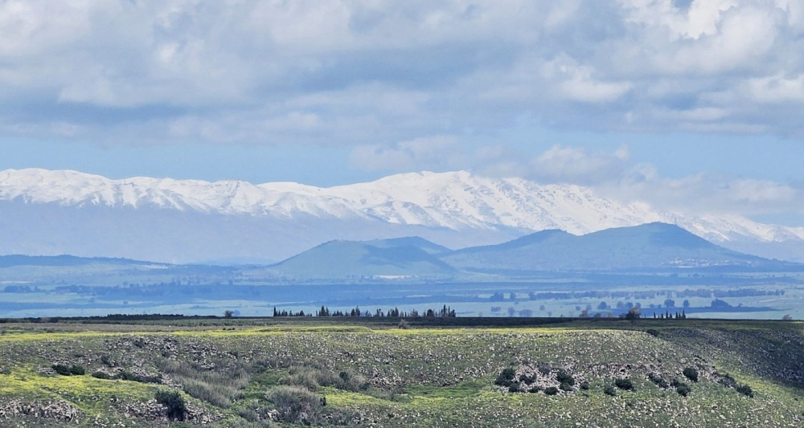

רגעים של הגולן נולד מתוך משהו פשוט: כל פעם שהגענו לכאן, משהו בנוף הזה נגע בנו מחדש. האור המשתנה על הגבעות, הריח של אדמה אחרי גשם, השקט שממלא את הרכב ברגע שיוצאים מהכביש הראשי — הרגשנו שיש כאן משהו שראוי שיסופר, לא רק שיתועד.
האתר הזה לא נועד להיות מדריך טיולים. הוא נועד להיות הרגע שלפני — הדפדוף שגורם לכם לרצות להגיע, לנשום עמוק ולתת לגולן להפתיע אתכם. את הפרטים, את המסלול המדויק, את ההמלצה למקום הנכון ביום הנכון — את זה תמיד עדיף לקבל ממי שמכיר הכי טוב: המארחים של הצימר שבו תתארחו.

האנשים שמפעילים את הצימרים בגולן הם חלק בלתי נפרד מהחוויה — הם אלה שיודעים איפה השקיעה הכי יפה השבוע, איזו מסעדה קטנה שווה נסיעה, ומתי כדאי לצאת כדי לפגוש את המקום בשקט שלו. המטרה שלנו היא לחבר בין התיירים לבין האנשים האלה, ולתת לכל אחד את הפתיחה הנכונה לשיחה.
אז אם הגעתם לכאן מתוך סקרנות, מוזמנים לדפדף, להתרשם, ולתת לגולן לעשות את שלו. את השאר — תשאלו את המארחים.
בין אם באתם לרגע אחד או לכמה ימים — אנחנו שמחים שהגעתם.